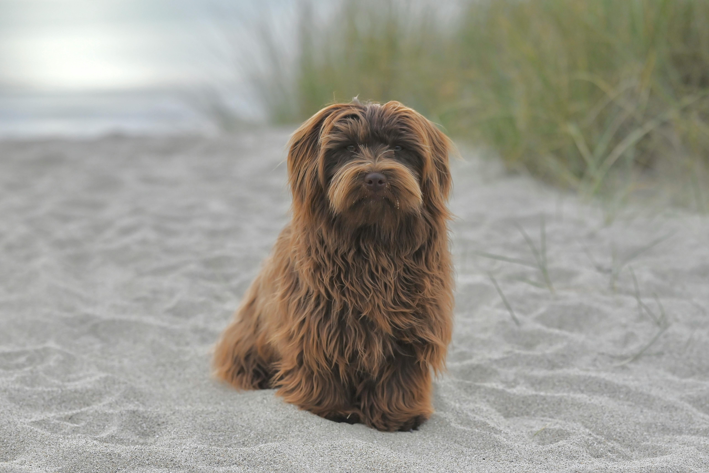

The Havanese is a small companion dog from Cuba known for its friendly personality and silky coat. They are affectionate, intelligent, and great family pets.
The Havanese is the national dog of Cuba and belongs to the Bichon family. They were originally bred as companion dogs for wealthy families and remain very people-oriented today.
Havanese dogs are social, playful, and extremely affectionate. They bond closely with their owners and do not like being left alone for long periods.
Their long, silky coat requires brushing several times a week to prevent tangles. Many owners choose shorter cuts for easier maintenance.
They enjoy daily walks and playtime. Havanese are intelligent and respond well to positive reinforcement training.